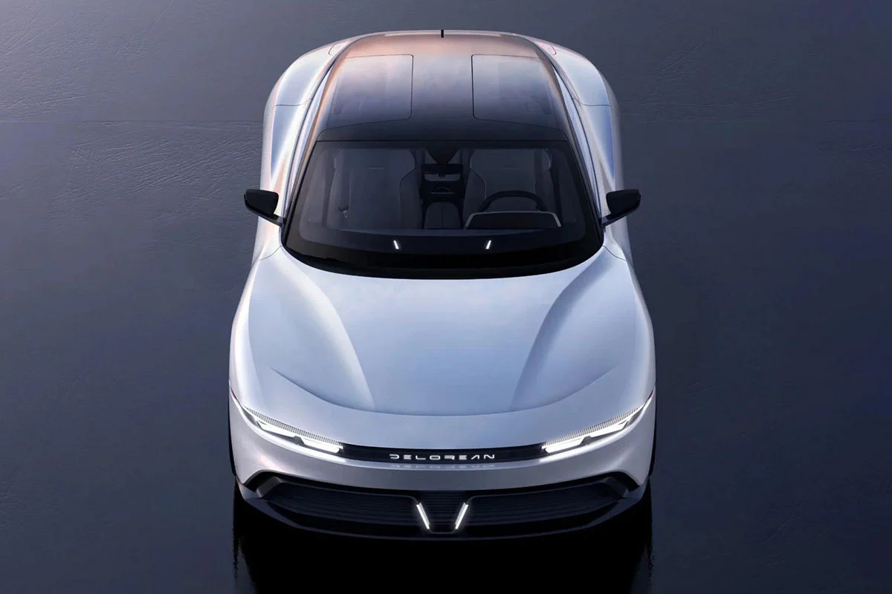
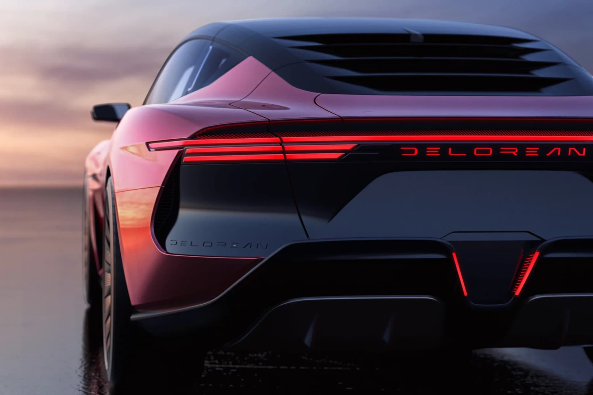
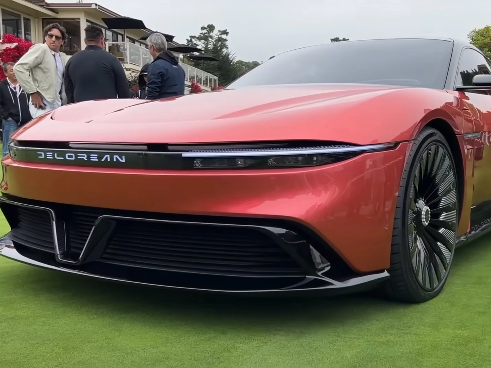

Un nuevo modelo que esta por salir al mercado

Vista delantera

Vista trasera

Vista delantera cercana

Vista diagonal
Tras años de espera y de que se filtraran varias fotos, se conoció la versión moderna del
mítico auto que lleva al Doc y a Marty MacFly al futuro en la famosa película. La nueva versión será un vehículo
con muchos lujos pero que también mantendrá algunos elementos del modelo clásico. DeLorean Motor Company, la
compañía que produjo el histórico DMC-12 que se inmortalizó en las películas de Volver al Futuro, presentó las
primeras imágenes oficiales de su nuevo vehículo totalmente eléctrico. Se llamará Alpha5 y las 88 unidades que
se
producirán estarán disponibles recién a partir de 2024. El renovado auto deportivo, en su nueva versión será una
coupé eléctrica diseñada por Italdesign que brillará por sus lujos pero que también mantendrá algunos elementos
característicos del mítico DMC-12, el auto que protagonizó la trilogía en la pantalla grande.
Si bien aún no se conocen todos los detalles, ya que la presentación oficial será en
agosto
en Pebble Beach, ya se conocen algunas de las características del nuevo modelo del cual solo se fabricarán 88
unidades. El nuevo diseño medirá 4,99 metros de largo, 2,04 metros de ancho y solo 1,3 metros de alto. Es decir,
será un poco más chico que el modelo clásico. La empresa creadora asegura que el Alpha5 podrá acelerar de 0 a
100
km/h en 2,9 segundos y tendrá una velocidad máxima de 250 km/h. Contará con una batería de 100 kWh que permitirá
483 km de autonomía por carga. La nueva versión tiene las puertas tipo "ala de gaviota", manteniendo en eso, la
impronta del DMC-12 y Según explicaron desde la empresa, el Alpha5 reemplaza las figuras cuadradas con trazos
más
fluidos dando un resultado mucho más aerodinámico.